MAGIS：基于 LLM 的 GitHub Issue 解决多智能体框架
论文针对 LLM 在仓库级 GitHub issue 解决任务上成功率极低的问题（SWE-bench 上直接使用 GPT-4 解决率不足 2%），先通过实证研究定位失败主因：待修改文件定位、代码行定位精度以及代码变更复杂度。据此提出 MAGIS 多智能体框架，设置 Manager、Repository Custodian、Developer、QA Engineer 四种角色：规划阶段用 BM25 检索候选文件并引入记忆机制（文件摘要压缩加 git diff 增量更新）过滤无关文件，Manager 将 issue 拆解为文件级任务并组建团队，kick-off 会议确认任务与依赖；编码阶段 Developer 先定位待修改行区间再生成替换代码，QA Engineer 审查并反馈迭代。在 SWE-bench 上以 GPT-4 为底座达到 13.94% 解决率，是直接使用 GPT-4 的 8 倍；在 SWE-bench Lite 上达到 25.33%，优于 AutoCodeRover 与 SWE-Agent。消融显示 QA 审查与人类 hints 分别带来约 1.92 与 1.57 个百分点的提升，行定位覆盖率与解决率显著正相关。
LLM 在函数级代码生成上表现出色，但在仓库级 GitHub issue 解决上成功率极低：SWE-bench 显示即使提供待修改文件路径，LLM 仍无法解决 95% 以上的实例。论文要回答两个问题：一是直接使用 LLM 解决 GitHub issue 为何受限（文件定位、行定位、变更复杂度等因素如何影响结果）；二是如何设计框架利用多 Agent 协作显著提升解决率。
先做实证研究：用行定位覆盖率（生成修改行与参考修改行的交集占比）和 logistic 回归分析其与解决率的相关性，并分析修改文件数、函数数、hunk 数等复杂度指标与解决率的相关性。基于发现设计四角色多智能体框架 MAGIS：① Manager 负责组队、组织会议与制定计划；② Repository Custodian 用 BM25 排序候选文件，并提出记忆机制——将文件用 LLM 压缩为摘要存入 memory，后续版本通过 git diff 增量更新摘要，以更短上下文判断文件与 issue 的相关性并过滤无关文件；③ Manager 将 issue 拆解为文件级任务、为每个任务定义 Developer 角色描述，并召开 kick-off 会议（循环发言）确认任务合理性与并发/依赖关系，生成主工作计划；④ Developer 采用多步编码：先用 LLM 确定待修改行区间，再生成新代码片段替换，用 Git 工具生成 diff；QA Engineer 基于 diff 产出 review_comment 与 review_decision，不通过则反馈迭代，直到通过或达到最大迭代次数。
SWE-bench 25% 子集上，MAGIS（GPT-4 底座）解决率达 13.94%，是直接使用 GPT-4 的 8 倍，超过此前最优的 Claude-2 两倍以上
无 QA、无 hints 的消融设置下仍达 8.71% 解决率（底座模型的 5 倍）；分别加入 QA 或 hints 可再提升 1.92 或 1.57 个百分点
QA Engineer 在有 hints 与无 hints 设置下分别使解决率提升 1.57% 与 3.31%
SWE-bench Lite 上解决率 25.33%，高于 AutoCodeRover、SWE-Agent 等同期方法（无 QA 时为 23.33%）
与 Devin 在 140 个重叠实例上对比：MAGIS 解决 21 个（15%）vs Devin 18 个（12.86%）；MAGIS 平均每实例处理时间低于 5 分钟、解决实例约 3 分钟，而 Devin 72% 的解决实例耗时超过 10 分钟
实证发现：行定位覆盖率与解决率显著正相关（Claude-2 上 logistic 回归系数 0.5997，P<0.05）；修改文件数与函数数与解决率显著负相关，MAGIS 缓解了这种负相关
不同仓库间解决率差异显著：有的仓库高达 40%，有的接近 0%
与 MetaGPT、ChatDev 等聚焦'从需求到代码'的仓库构建类多智能体系统不同，MAGIS 面向软件演化场景——在既有大型仓库上解决 GitHub issue 并生成代码变更。其特色在于：以实证研究（文件定位、行定位覆盖率、变更复杂度与解决率的相关性）驱动框架设计；提出文件摘要记忆复用机制（摘要 + git diff 增量更新）在保证文件定位召回的同时压缩上下文与调用成本；引入 kick-off 会议式协调与 QA 审查迭代 loop 提升单 Agent 执行可靠性。
相关度级别：high
命中能力域：3.1 上下文工程与记忆 | 3.3 Agent 架构与工具使用 | 3.4 多智能体协作 | 3.5 评测与可靠使用
理由：论文同时直接命中团队四个能力域：3.4 多智能体协作（Manager/Custodian/Developer/QA 四角色分工、任务分解、kick-off 会议协调机制）；3.3 Agent 架构与执行可靠性（规划-编码-审查-反馈迭代的 Agent loop、行级定位的多步编码设计）；3.1 上下文工程与记忆（文件摘要压缩存入 memory、用 diff 增量更新摘要以最小化上下文长度，是典型的长上下文管理与成本优化策略）；3.5 评测与可靠使用（基于 SWE-bench 的系统评测与消融、用行定位覆盖率等中间指标做失败归因、PR 评论 hints 的人机协作接入、与 Devin 的效率对比）。对团队构建代码生成/审查类 Agent 与多 Agent 编排流程有直接的方法与架构参考价值。
建议动作：深入精读并做内部分享
arXiv:2403.17927v2 [cs.SE] 27 Jun 2024
复旦大学 wtao18@fudan.edu.cn
中山大学 wangylin36@mail.sysu.edu.cn
澳门大学 yucheng.zhou@connect.um.edu.mo
张文强
复旦大学
wqzhang@fudan.edu.cn
香港中文大学 chengyu@cse.cuhk.edu.hk
在软件开发中，解决 GitHub 仓库中涌现的问题（issue）是一项复杂的挑战，它不仅涉及新代码的引入，还涉及现有代码的维护。大语言模型（LLMs）在代码生成方面已展现出潜力，但在解决 GitHub issue 方面仍面临困难，尤其是在仓库层面。为克服这一挑战，我们实证研究了 LLM 未能解决 GitHub issue 的原因，并分析了其中的主要因素。受这些实证发现的启发，我们提出了一种新颖的基于 LLM 的 GitHub issue 解决多智能体（MultiAgent）框架 MAGIS（MultiAgent framework for GitHub Issue reSolution），该框架由四个针对软件演化定制的 Agent 组成：Manager、Repository Custodian、Developer 和 Quality Assurance Engineer Agent。该框架利用各 Agent 在规划与编码过程中的协作，释放 LLM 解决 GitHub issue 的潜力。在实验中，我们采用 SWE-bench 基准测试（benchmark）将 MAGIS 与流行的 LLM（包括 GPT-3.5、GPT-4 和 Claude2）进行比较。MAGIS 能够解决 13.94% 的 GitHub issue，显著优于基线方法。具体而言，与直接应用先进 LLM GPT-4 相比，MAGIS 的解决率实现了八倍的提升。
在本研究中，我们分析了影响 LLM 解决 GitHub issue 有效性的因素。此外，我们的实证分析得出结论：定位待修改的文件/代码行与解决 GitHub issue 的性能之间存在相关性。基于这些洞察，我们提出了一种新颖的基于 LLM 的多智能体（multi-agent）框架，称为 MAGIS，该框架由四类 Agent 组成：Manager、Repository Custodian、Developer 和 Quality Assurance (QA) Engineer。我们的方法通过各 Agent 之间的协作来促成 GitHub issue 的解决，每个 Agent 都履行独特的职责：Manager 协调整个流程，Repository Custodian 增强文件定位，Developer 在定位代码行后执行代码变更，QA Engineer 则审查代码变更。
在实验中，我们在 SWE-bench 上评估了我们的框架，并将其性能与现有的流行 LLM 进行比较，例如 ChatGPT-3.5 [37]、GPT-4 [38] 和 Claude-2 [1]。结果表明，我们的框架以 GPT-4 作为基础模型，显著优于基线方法，与直接应用 GPT-4 相比实现了八倍的性能提升。进一步的分析表明，其他因素，即代码变更的规划、在代码文件中定位代码行以及代码审查流程，也会显著影响解决率。
我们的主要贡献总结如下：
SWE-bench [27] 揭示了大语言模型（LLM）在解决 GitHub issue 时所面临的挑战。例如，在他们的评估中，GPT-4 只能解决测试集中不到 2% 的 issue。相反，在函数级代码生成等任务中，LLM 表现出卓越的性能（例如，GPT-4 在 HumanEval [36] 上获得了 67.0 的分数）。鉴于 GitHub issue 解决的复杂性类似于仓库级编码，我们旨在研究：为什么直接使用 LLM 解决 GitHub issue 的性能有限？（RQ 1）。我们从以下三个方面回答这一研究问题：
定位待修改的文件。GitHub issue 解决是一项仓库级编码任务，它与文件级编码任务的主要区别在于定位需要修改的文件这一挑战。Jimenez 等人 [27] 采用 BM25 方法 [46] 来检索相关代码文件，随后将这些文件用作 LLM 的输入。在采用检索方法之后，需要选择 topK 个文件，或根据 LLM 的最大上下文长度截断内容。
纳入更多文件可以提高召回率分数。然而，这也对 LLM 的能力提出了很高的要求。正如研究 [27] 所表明的，随着召回率分数的提高（从 29.58 提高到 51.06），Claude-2 的解决率反而下降（从 1.96 降至 1.22）。这种下降可能归因于包含了不相关的文件，或者 LLM 有效处理更长上下文的能力有限。因此，通过在最小化文件集合的同时追求更高的召回率分数，可以更好地优化 LLM 的性能，这表明需要在召回率优化与所选文件数量之间取得策略性平衡。
定位待修改的代码行。除了文件定位的影响之外，我们还深入研究了在提供正确修改文件的情况下失败实例的生成。一个典型的代码变更由多个 hunk 组成，每个 hunk 指定了要修改的目标行号，并详细说明在这些位置所做的更改。为了定量分析行定位的准确性，我们以参考代码变更中修改内容的行号范围作为基准，并假设代码变更的正确修改位置在大多数情况下是唯一确定的。通过计算生成结果与参考结果的行号范围覆盖率，我们可以估计生成过程中行定位的准确性，即：
其中，分子是被划分为 n 个 hunk 的参考结果与被划分为 m 个 hunk 的生成结果之间修改行交集的长度，分母是参考结果中修改行的数量。关于公式 1 的更多细节可在附录 A.1 中找到。
For 574 instances in the SWE-bench that experiments GPT-4 [27], the distribution of the coverage ratio between the results generated by three LLMs and the reference is shown in Fig. 1. From this, we observe that the performance of LLMs in generating the code change is probably related to their ability to locate code lines accurately (Detailed explanation can be found in Appendix A.2).
Furthermore, we assess the relationship between the coverage ratio and the issue resolution by calculating their correlation coefficient. Given that the distribution of these variables exhibits skewness, and the resolution result is binary (resolved or not), logistic regression is employed for the analysis across three LLMs. However, due to the limited number of successfully generated instances on GPT-4 and GPT-3.5, a statistically significant relationship is only detected
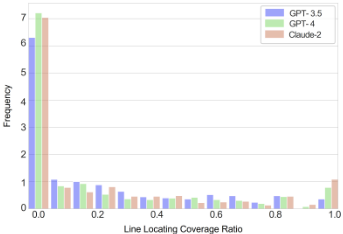
in the result generated by Claude-2. The result, i.e., P-value < 0 . 05 , shows statistical significance. Specifically, with a coefficient, 0 . 5997 , on Claude-2, there is a substantial and positive relation between improvements in the coverage ratio and the probability of successfully resolving issues, which demonstrates that locating lines is a key factor for GitHub issue resolution.
Complexity of the Code Changes. The complexity of the code change is reflected in various indices: the number of modified files, functions, hunks, and lines added or deleted. Firstly, we quantitatively assess the complexity by calculating the value of various indices corresponding to the reference code change. Secondly, the coefficient is calculated between the numbers in each index and the issue resolution. Tab. 1 shows the correlation scores under the logistic regression.
As shown in Tab. 1, all three LLMs demonstrate a statistically significant correlation with the issue resolution across several indices. The correlation scores for the number of files and functions modified are notably negative for all models, indicating that an increase in these indices is associated with a decreasing likelihood of issue resolution. This suggests that the more complex the code change, as indicated by a higher number of files and functions modified, may hinder the issue resolution. More analysis can be found in Appendix A.3. The analysis reveals a relationship between the complexity, as measured by several indices, and whether to successfully resolve the issues in software evolution. The negative correlations suggest that increased complexity, particularly in terms of the number of files and functions changed, tends to hinder issue resolution.
| LLM | # Files | # Functions | # Hunks | # Added LoC | # Deleted LoC | # Changed LoC |
|---|---|---|---|---|---|---|
| GPT-3.5 | - 17 . 57 * | - 17 . 57 * | - 0 . 06 * | - 0 . 02 | - 0 . 03 | - 0 . 53 * |
| * | * |
| LLM | # Files | # Functions | # Hunks | # Added LoC | # Deleted LoC | # Changed LoC |
06
09
04
07
The correlation between the index and the issue resolution is significant (P-value
<
05
).
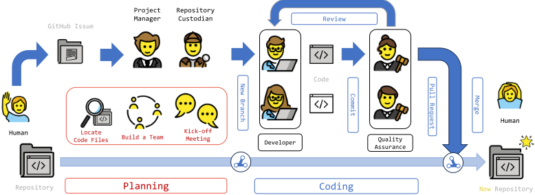
基于识别影响大语言模型（LLM）解决 issue 的关键因素的实证研究，我们设计了如图 2 所示的框架。该框架旨在通过将 GitHub issue 解决这一复杂任务转化为协作性工作来缓解负面影响。该框架在工作流中为基于 LLM 的智能体（Agent）设置了四个协同工作的关键角色：① Manager（管理者）：该角色负责团队组建、会议组织和计划制定。② Repository Custodian（仓库管理员）：负责根据 GitHub issue 在仓库中定位相关文件，并记录仓库的变更。③ Developer（开发者）：该角色参与规划讨论，并完成 Manager 下达的任务。④ Quality Assurance (QA) Engineer（质量保证工程师）：负责审查 Developer 的代码变更，以确保整个仓库的质量。
协作过程包括规划和编码。在规划阶段，一个 issue 会被分配给 Manager 和 Repository Custodian。Custodian 识别出与该 issue 相关、需要修改的候选文件。Manager 依据 issue 描述和候选文件列表来定义任务并组建团队，其中每位成员都是为所定义任务专门设置的 Developer。Manager 与 Developers 召开启动会议（kick-off meeting），并制定计划。在编码阶段，Developers 承担 Manager 分配的任务，QA Engineer 则对每一处代码变更进行审查。如果某项变更未能达到质量标准，QA Engineer 会提供反馈，促使进行进一步修改，直到该变更获得 QA Engineer 批准，或达到设定的迭代次数上限。
我们的工作流借鉴了 GitHub Flow[22] 的思想，这是一种被众多软件团队采用的高效人类工作流范式。人类工作流与我们基于 LLM 的 Agent 框架都优先重视具有不同技能的个体之间的协作。尽管二者的底层原则相似，但仍存在显著差异。因此，我们对角色进行了如下定制：
4: R i ← BM25( R i , q x ) 5: C k i ←R i [: k ] 6: for f i ∈ C k i do 7: f h , s h ← find ( f i , M ) 8: if ∃ f h and len( s h ) < len ( f i ) then 9: if h is i then 10: s i ← s h 11: else 12: ∆ d ← diff( f h , f i ) 13: m ←L (∆ d, P 1 ) 14: s i ← s h ∪ m 15: end if 16: else 17: s i ←L ( f i , P 2 ) 18: end if 19: M←M .update( { f i : s i } ) 20: if L (( s i , q x ) , P 3 ) is false then 21: C k i ←C k i - f i 22: end if 23: end for
通过 ' git diff ' 命令），LLM 可以利用 f h 和 ∆ d 来理解 f i 。如果差异较小而文件 f i 较长，那么复用存储在记忆中的先前摘要 s h 而非 f i 的内容将是有价值的。具体而言，如果 s h 的长度小于 f i 的长度，则带有提示 P 1 的 L 可以将代码变更 ∆ d 总结为一条 'commit message' m 。 s h 与 m 的组合构成了较新版本 f i 的描述，使得带有提示 P 3 的 LLM L 能够以更短的上下文长度判断其是否与该 issue 相关。基于相关性，custodian agent 会过滤掉无关文件，从而使 Manager agent 能够基于剩余的相关文件来定义任务。
团队组建。在此过程中，Manager agent 可以根据 issue 的需要灵活地“招募”团队成员。首先，在接收到定位到的文件后，Manager 开始分析该仓库的 GitHub issue，并将其拆分为详细的文件级任务。具体而言，对于候选集 C k i 中的每个代码文件 f i ，Manager 利用带有提示 P 4 的 LLM L 以及 issue 描述 q x 来定义相应的文件级任务 t i 。一个 issue 可以被转换为多个任务。这些任务连同相关联的代码文件一起被存储在任务集 T k i 中。
一旦某个任务被明确，Manager 便通过使用提示 P 5 和任务 t i 调用 LLM L 来定义 Developer 的个性角色 r i 。通过遍历这些候选代码文件，Manager agent 最终设计出一组 Developer agent 角色描述 D k i ，从而组建起开发团队。团队组建的细节如 Algorithm 2 所示。这种方法简化了 LLM 的任务，因为每个团队成员只需处理一个子任务，而无需解决整个复杂的 issue。
启动会议。在组建团队之后，Manager 会组织一次启动会议。该会议有两个目的：① 确认这些任务是否
k i 2: Config: prompts: P k 4: for f i ∈ C k i do 5: t i ←L (( f i , q x ), P 4 ) 6: T k i ←T k i ∪ ( f i , t i ) 7: r i ←L (( t , q x ), P 5 ) 8: D k i ←D k i ∪ r i 9: end for 10: recording = kick_off_meeting( D k i ) 11: D k i ←L (( D k i , recording ), P 6 ) 12: c main ←L ( recording , P 7 )
由 Manager 分配的任务是合理的，并确保团队中的所有 Developer 能够协作解决 issue q x，② 确定哪些 Developer 的任务可以并发执行，哪些任务存在依赖关系需要排序。会议采用循环发言的形式：Manager 负责开启发言、引导讨论并总结结果，而 Developer 们则基于先前的讨论依次发表意见。该会议的一个示例可参见附录 B。会议结束后，Developer 们根据讨论记录 recording 调整各自的角色描述 D k i ，Manager 则利用 LLM L 和提示 P 7 生成主工作计划 c main 。该计划以代码形式呈现，并被嵌入到程序中执行。这种会议使 Developer 之间的协作更加高效，并避免了潜在的冲突。
1: 输入：文件-任务对集合：T k i ，LLM：L
2: 配置：提示：P ，最大迭代次数：n max
3: 输出：代码变更：D
4: for f i , t i ∈ T k i do
5: a i ←L (( f i , t i ), P 8 )
6: for j ∈ [ 0 , n max ) do
7: if j > 0 then
8: t i = ( t i , review_comment )
9: end if
10: { [ s ′ i , e ′ i ] } ← L (( f i , t i ), P 9 )
11: f i , old_part ← split( f i , { [ s ′ i , e ′ i ] } )
12: new_part ←L (( f i , t i , old_part ), P 10 )
13: f ′ i ← replace( f i , { [ s ′ i , e ′ i ] } , new_part )
14: ∆ d i ← diff( f i , f ′ i )
15: review_comment = L (( t i , ∆ d i ), P 11 )
16: review_decision = L (( review_comment ), P 11 )
17: if review_decision 为真 then
18: break
19: end if
20: end for
21: ∆ d ← diff( f ′ i , f i )
22: D ← D ∪ ∆ d
23: end for
基于 §2 中关于代码行定位与复杂度的实证研究，我们将代码变更生成转化为一个多步骤编码过程，该过程旨在发挥 LLM 在代码生成方面的优势，同时缓解其在代码变更生成方面的不足。两类 Agent 参与编码过程：开发者（Developer）和 QA 工程师（QA Engineer）。如算法 3 所述，对于 T k i 中的每个任务 t i 及其关联的代码文件 f i，Developer Agent 通过 LLM L 使用提示 P 8 生成 QA 工程师的角色描述 a i。随后，Developer 与其对应的 QA 工程师协作执行编码任务。在 Developer 的每次执行过程中，首先将需要修改的代码行范围确定为一组区间 { [ s ′ i , e ′ i ] }，其中 s ′ i 表示第 i 个 hunk 中的起始行号，e ′ i 为结束行号。该确定结果由 L 使用提示 P 9 通过分析任务内容 t i 和文件内容 f i 而生成。这些区间将原始代码文件 f i 划分为待修改部分（old_part）和待保留部分。随后，Developer 通过 L 使用提示 P 10 生成新的代码片段 new_part。这些代码片段替换 old_part，从而得到代码文件的新版本 f ′ i。借助 Git 工具，生成该文件 f i 对应的代码变更 ∆ d i。基于代码变更 ∆ d i，QA 工程师通过 LLM L 使用提示 P 11 生成 review_comment 和 review_decision。如果判定结果 review_decision 为否定（即 false），反馈 review_comment 将促使 Developer 在下一次尝试中修改代码。该迭代过程持续进行，直至代码变更满足质量标准（即 review_decision 为 true）或达到预定义的最大迭代次数。迭代结束后，代码变更的最终版本 ∆ d 即被确定，它是对每个文件的最终修改结果。在此过程中生成的所有最终版本代码变更被合并到仓库级代码变更 D 中，作为该 issue 的解决方案。
在实验中，我们采用 SWE-bench 数据集作为评估基准测试（benchmark），因为它是专门为评估 GitHub issue 解决性能而设计的最新数据集。SWE-bench 包含从 12 个流行的 Python 仓库中提取的 2,294 个 issue，代表了真实的软件演化需求。鉴于已观察到在 SWE-bench 的 25% 子集上得到的实验结果与在整个数据集上得到的结果一致 [27]，我们根据其材料 [13]，选择了此前在 GPT-4 实验中使用的相同 25% 子集。此外，这五个 LLM 的实验分数已由他们公开提供 [28]。
我们的框架可以灵活地集成各种 LLM。为了与 SWE-bench 报告的分数进行比较，我们选择 GPT-4 作为基础 LLM。选择 GPT-4 的另一个原因是，正如在 MBPP [2] 和 HumanEval [12] 等 benchmark 上所展示的，GPT-4 在代码生成与理解方面表现出卓越的性能。由于无法获得 API 访问权限，我们未选择 Claude-2。
遵循 SWE-bench [27] 的做法，在提供所需修改文件的设置下，我们使用应用比率（applied ratio）和解决比率（resolved ratio）来评估性能。applied ratio 表示代码变更被成功生成且能够通过 Git 应用到代码仓库的实例所占的比例。resolved ratio 指代码变更被成功应用并通过一系列测试的实例所占的比例。更多详细说明见附录 C。
The comparative performance analysis between our framework and other LLMs on the same dataset is presented in Tab. 2. The results indicate that our framework significantly outperforms other LLMs. Notably, with a resolved ratio of 13 . 94% , our framework's effectiveness is eight-fold that of the base LLM, GPT-4. This substantial increase underscores our framework's capability to harness the potential of LLMs more effectively. Furthermore, when contrasted with the previous state-of-the-art LLM, Claude-2, our framework's resolved ratio exceeds that benchmark by more than two-fold. This superior performance unequivocally establishes the advance of our method.
The ablation study is designed to simulate two scenarios: ① Without QA (w/o QA): Considering the QA Engineer agent as optional within our framework, we directly evaluate the code changes generated by the Developer agent, bypassing the QA process. This scenario aims to investigate the effectiveness and necessity of QA Engineer review. ② Without hints (w/o hints): Hints refer to the textual content found in the comments section of pull requests, which are typically created before the first commit of the pull request. This setting means our framework oper- BM25
| Method | %Applied | %Resolved |
|---|---|---|
| GPT-3.5 | 11 . 67 | 0 . 84 |
| Claude-2 | 49 . 36 | 4 . 88 |
| GPT-4 | 13 . 24 | 1 . 74 |
| SWE-Llama 7b | 51 . 56 | 2 . 12 |
| SWE-Llama 13b | 49 . 13 | 4 . 36 |
| MAGIS | 97.39 | 13.94 |
| MAGIS (w/o QA) | 92 . 71 | 10 . 63 |
| MAGIS (w/o hints) | 94 . 25 | 10 . 28 |
| MAGIS (w/o hints, w/o QA) | 91 . 99 | 8 . 71 |
| Method | %Applied | %Resolved |
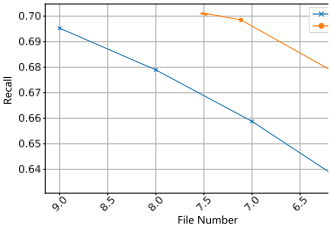
6.0
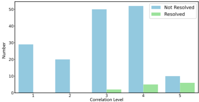
ates without any clarifications except for the issue, despite such information being available on GitHub before the issue resolution process begins. This analysis aims to explore if the participation of humans could potentially improve the success rate of issue resolution.
Our framework shows a significant improvement in issue resolution, even without QA or hints. It achieves a resolved ratio of 8 . 71 , which is five times higher than that of the base LLM. This increase underscores the contribution of other agents in MAGIS to its overall performance. Furthermore, integrating cooperation with QA or hints separately can further elevate the resolved ratio by 1 . 92 or 1 . 57 , respectively. These findings underscore the value of QA Engineers and the participation of humans, as demonstrated by the resolved rates achieved through their integration.
For instance, to resolve the issue [17] from the repository Django [15], the developer modifies four hunks in two files [16], as shown in Fig. 15. Despite the availability of two provided files, our method opts for modifications in only one file, as illustrated in Figure 16. Remarkably, this simpler code change enables the repository to pass all requisite test cases.
Additional comparison can be found in Appendix D and E, and detailed case study is shown in Appendix H. Furthermore, the statistics on the generated code changes can be found in Appendix F.
为了探究规划过程的有效性，我们对 Repository Custodian 和 Manager agent 进行了分析。Repository Custodian agent 的性能通过召回率得分随文件数量变化的曲线来观察，如图 3 所示。该曲线表明，在不同的所选文件数量下，我们的方法始终优于 BM25 基线，这说明我们的方法能够以最少的选择识别出最大数量的相关代码文件。
对于 Manager agent，我们考察了其生成的任务描述与由 LLM 生成的参考代码变更之间的一致性。参照研究 [64] 的做法，我们选择 GPT-4 作为评估器，对参考代码变更与生成的任务描述之间的相关性进行评分。相关性得分依据表 6 中定义的一组标准来确定。更高的相关性得分意味着更好的一致性，从而意味着更准确、更有效的规划方向。这些相关性得分的分布如图 4 所示。值得注意的是，大多数得分达到 3 分或以上，这表明绝大多数任务描述在规划方向上是正确的。此外，得分越高，issue 得到解决的概率也越高，这体现在得分为 4 和 5 时 'resolved' 结果所占的比例更大。这意味着，当生成的任务描述与参考高度一致时，解决该 issue 的可能性更高。上述分析证明了 Repository Custodian 和 Manager agent 在我们框架的规划过程中的有效性。
为了评估我们框架中编码过程的有效性，我们分析了 Developer 在定位代码行以及解决不同复杂度 issue 方面的表现。
图 5 展示了 MAGIS 与各基线方法的代码行定位覆盖率分布。这一可视化结果显示，我们的 Developer agent 经常能够获得接近 1 的代码行定位覆盖率。与基线相比，Developer agent 明显更偏好 图 6：不同代码行定位覆盖率区间下的解决比例。
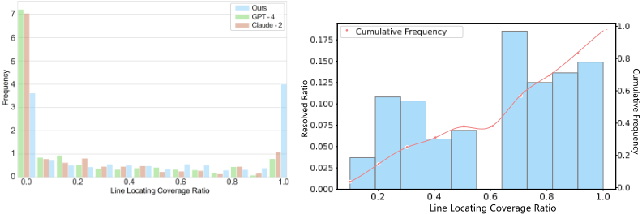
接近 1 的较高分布值，反之，对接近 0 的较低分布值的偏好则有所减弱。这样的分布验证了 MAGIS 在定位代码行方面的卓越性能。
图 6 提供了进一步的分析，展示了代码行定位覆盖率与相应覆盖率区间内 issue 解决比例之间的关系。如图 6 所示，右侧的四根柱子高于左侧的五根柱子，这表明解决比例可以随代码行定位覆盖率的提高而上升。这一观察也表明，准确定位代码行对于解决 issue 十分重要。图中以橙色显示的累积频率曲线提供了补充分析，表示沿代码行定位覆盖率方向直至每一点处 issue 解决比例的累积占比。随着代码行定位覆盖率的提高，累积频率稳步上升，这进一步印证了在高覆盖率区域内解决 issue 更容易成功的观点。曲线左半部分的斜率低于右半部分，表明在较低覆盖率下提升覆盖率所带来的收益不如在较高覆盖率下显著。因此，Developer agent 应当优先提升其定位代码行的能力。
此外，如表 3 所示，我们给出一项逻辑回归分析，量化了若干复杂度指标与 issue 解决之间的相关性。结果表明，GPT-4 在文件数量和函数数量上均呈现显著的负相关，这意味着随着这些指标的增大，issue 得到解决的可能性会下降。相反，在我们的模型 MAGIS 上，这种负相关并不那么明显，尤其是在文件数量和函数数量方面，这表明与这些复杂度指标相应的挑战得到了缓解。
| Method | # Files | # Functions | # Hunks | # Added LoC | # Deleted LoC | # Changed LoC |
|---|---|---|---|---|---|---|
| GPT-4 MAGIS | - 25 . 15 * - 1 . 55 * | - 25 . 15 * - 1 . 55 * | - 0 . 06 - 0 . 12 * | - 0 . 10 - 0 . 04 * | - 0 . 04 - 0 . 06 * | - 0 . 21 - 0 . 57 * |
| Method | # Files | # Functions | # Hunks | # Added LoC | # Deleted LoC | # Changed LoC |
为了评估 QA Engineer 的表现，我们开展了消融实验，结果如表 2 所示。如表所示，在有提示和无提示的设置下，QA Engineer 的存在可分别将解决比例提高 1.57% 和 3.31%。这一整体提升证实了 QA Engineer 对改善结果的贡献。此外，附录 I 中详述的一个案例进一步凸显了 QA Engineer 的有效性。
研究人员已经开发了基于 LLM 的多智能体系统，使其能够完成更复杂的任务。例如，MetaGPT [23, 24] 模拟编程团队的标准操作流程（Standardized Operating Procedures, SOPs），并在 HumanEval [12] 和 MBPP [2] 等基准测试上取得了领先分数。类似地，ChatDev [44] 作为一家虚拟开发公司运作，将需求分解为原子任务，并利用相互沟通和自我反思来缓解 LLM 的幻觉。虽然这些系统在将需求转化为代码方面表现出色，但它们往往忽视了软件演化过程中代码变更生成所面临的挑战 [25]。GitHub issue 包含不同类型的需求，其中大多数属于缺陷修复。以往的研究人员提出了缺陷定位方法 [66, 43]，还有一些研究人员探索了各种自动程序修复方法 [58, 7, 56, 3, 60, 54]。相关工作的完整版本见附录 J。
本文揭示了 LLM 在软件开发中的潜力，尤其是在解决 GitHub issue 方面。我们的实证研究识别了直接应用 LLM 所面临的挑战。为了应对这些挑战，我们提出了一种新颖的基于 LLM 的多智能体框架 MAGIS，通过精心设计的智能体协作来增强 issue 解决能力。MAGIS 在 SWEbench 基准测试上相对于流行 LLM 的优越性凸显了其有效性，为将 LLM 集成到软件演化工作流中指明了一个有前景的方向。
计算覆盖率（coverage ratio）的公式为公式 1。如该公式所示，对于每个 GitHub issue 解决实例，参考代码变更 r 中代码变更的范围（以行数计）表示为区间集合 L r = { [ s 0 , e 0 ] , ..., [ s n , e n ] }，而生成的代码变更 g 的行范围则为 L g = { [ s ′ 0 , e ′ 0 ] , ..., [ s ′ m , e ′ m ] }，其中 s 和 e 分别表示文件中每个修改块（hunk）的起始行号和结束行号，参考代码变更中包含 n 个 hunk，生成的代码变更中包含 m 个 hunk。
如图 1 所示，我们观察到：① 在覆盖率为 0 附近（图的左侧）的分布在三个大语言模型（LLM）中均为最高，这表明在大多数情况下，这些模型生成的内容在定位代码行方面与参考代码变更之间的覆盖率非常低。这意味着这些 LLM 在生成代码变更的过程中很可能无法准确定位需要修改的代码行。② 在行定位覆盖率接近 1 的分布中（图的右侧），三个模型表现出一致的排名（即 Claude-2 > GPT-4 > GPT-3.5），且该排名与三个模型所解决实例的比例也相一致。这一现象表明，LLM 在生成代码变更方面的性能可能与其准确定位代码行的能力有关。
如图 1 所示，与 GPT-3.5 和 GPT-4 相比，Claude-2 呈现出一种不同的模式：其在文件数量和函数数量上的负相关性要低得多，这表明它是一种更高效地生成代码变更以解决 GitHub issue 的方法。然而，在其他指标上，例如 hunk 数量、新增代码行数（LoC）、删除的 LoC 以及变更的 LoC，它也表现出显著的负相关性。
图 7 展示了一次团队启动会议。在这次会议中，共有三名参与者：Manager 智能体 Oliver CodeLead，以及两名 Developer 智能体 Django Database Specialist 和 Alex Rossini。他们讨论了一个具体的 issue 1，分配了任务，并确定了工作流顺序。
应用率（applied ratio）表示代码变更被成功生成、并且能够使用 Git 工具应用到现有代码仓库的实例所占的比例，即：
其中 D 表示生成的代码变更集合中能够通过 ' git apply ' 操作应用到原始代码仓库的实例集合，I 为测试集中所有实例的集合。解决率（resolved ratio）指代码变更被成功应用并通过一系列测试的实例所占的比例，即：
其中 T old 表示旧版本代码仓库能够通过的全部测试用例，T new 表示为新需求设计的全部测试用例，d i 表示为解决第 i 个实例中的 issue 而生成的代码变更。此外，T ( d ) = True 表示代码变更 d 能够通过 T 中的所有测试用例。
1 https://code . djangoproject . com/ticket/30664
16
7 2
8 9
2 1
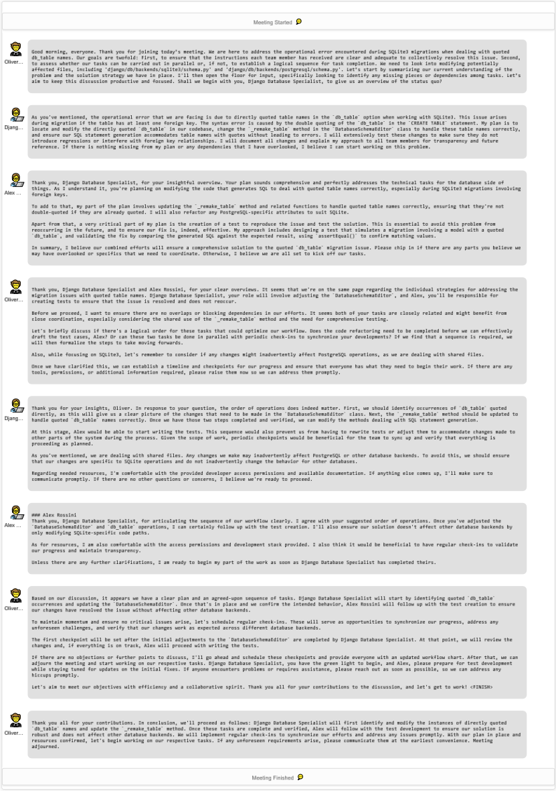
4 3
13 1
11 3
17
召回率得分（recall score）与文件数量（file number）关系曲线用于衡量定位待修改代码文件的有效性。召回率得分指在所有需要修改的文件中成功定位的文件所占的比例。计算第 i 个实例的文件定位召回率得分的公式如下：
其中 G i = ∑ n j =0 g i,j 表示我们的框架所定位到的文件路径集合，集合中的每个文件路径记为 g i,j ，文件总数为 n ；R i = ∑ m k =0 r i,k 表示需要修改的文件路径，每个参考文件路径记为 r i,k ，文件总数为 m 。在该曲线中，“文件数量”指在所有实例上为达到给定召回率得分而平均需要处理的文件数量。具体而言，它说明了在达到曲线上任意一点所表示的召回率得分之前，我们的框架平均需要定位多少个文件。该度量同时反映了文件定位的有效性与效率。
最近，一些同期工作 [39]，例如 AutoCodeRover [61] 和 SWE-Agent [59]，被提出用于解决该任务。这些方法使用 SWE-bench lite 进行评估，它是 SWE-bench 的一个标准子集，被推荐用于评估 [9]。考虑到预算限制，我们在 SWE-bench lite 上进行了实验，以便在相同问题的解决上与它们进行比较。
实验结果如 Tab. 4 所示。MAGIS 取得了最高的解决率 25.33%，优于其他基线方法。在没有 QA 的情况下进行评估时，MAGIS 的性能略有下降，为 23.33%，而在其他两种消融设置下则出现下降。这项对比研究凸显了 MAGIS 的鲁棒性，尤其是在提供全面输入的情况下，并突出了 QA 和提示（hints）对其性能的影响。结果表明，尽管 AutoCodeRover 和 SWE-Agent 等新方法展现出潜力，MAGIS 仍然是解决 GitHub issue 的一种有效方法。
| Method. | AutoCodeRover. | SWE-Agent. | MAGIS.Full | MAGIS.w/o QA | MAGIS.w/o hints | MAGIS.w/o (hints, QA) |
|---|---|---|---|---|---|---|
| Resolved | 16 . 11% ( 22 . 33% *) | 18 . 00% | 25.33% | 23 . 33% | 16 . 67% | 16 . 00% |
| Method. | AutoCodeRover. | SWE-Agent. | MAGIS.Full | MAGIS.w/o QA | MAGIS.w/o hints | MAGIS.w/o (hints, QA) |
Devin 是一款用于软件开发的新型智能体（agent）[51]，其性能也已在 SWE-bench 上得到了评估。然而，Devin 所采用的评估数据集与 SWE-bench 论文 [27] 中报告的 GPT-4 实验所使用的子集并不相同。对每个实例的仓库名称和拉取请求（pull request）ID 进行分析后发现，两个数据集之间仅有 140 个实例重合。
在这 140 个共享实例中，我们的框架成功解决了 21 个（15%）issue，超过了 Devin 所解决的 18 个（12.86%）issue 2。然而，这一比较可能并不完全公平。Devin 可能采用的底层大语言模型（LLM）尚不可知，并且它具备整合来自环境的反馈的能力。此外，Devin 报告的分数是在给定整个仓库的设置下取得的，而且正如报告 3 中所详述，它使用“包括 shell、代码编辑器和浏览器在内的常用开发者工具”运行，并且“具有互联网访问能力的智能体可能通过其他方法查找外部信息”。相比之下，我们的方法仅依赖 shell，无需任何额外的外部工具。
2 https://github . com/CognitionAI/devin-swebench-results/tree/main/output_diffs/ pass
3 https://www . cognition-labs . com/introducing-devin
18
在运行时间方面，Devin 所解决的实例中有 72% 需要超过 10 分钟才能完成。相比之下，我们的框架在约 3 分钟内即可完成每个已解决的 issue。平均而言，我们的框架在 5 分钟内即可完成对每个实例的处理，这表明其能够以最少的时间开销协助解决 GitHub issue。
本节提供了使用我们的框架所得到的已解决 issue 对应的代码变更，以及适用但未解决 issue 的代码变更的统计数据。
已解决 issue 的实例的代码变更统计如表 5 所示。总体而言，这些实例所生成的代码变更的统计信息，例如代码文件、函数、hunk 和删除行的平均数量，与人类编写的参考解决方案相比均仅有细微差异（不超过 0.3）。这表明对于这些实例，我们的框架所生成的代码变更的复杂度与人类相似。此外，从表中观察到的最大值表明，我们的框架能够实现涉及两个文件、四个 hunk 以及 1,655 行修改的代码变更，其中单次修改最多可达 190 行。结果证明了我们的方法在解决需要在多个位置修改代码文件且具有长上下文的复杂 issue 方面的有效性。
具体而言，已解决实例的修改行数分布如图 8 所示。我们观察到，对于已解决的实例，我们框架的修改行数分布超过了参考解决方案，尤其是新增行数显著高于参考解决方案。通过人工检查，我们发现我们的框架所提供的生成结果通常包含更多的注释信息，这导致修改行总数增加。例如，图 10 展示了我们框架的生成结果。新版本文件中的第 365、368、371、374、383 行对应于新增代码的注释。这些自然语言描述在实际软件演化中具有价值 [26, 35]。相比之下，图 12 展示了一个缺少此类解释性注释的人类编写的解决方案，这可能不利于软件维护者进行阅读和理解。
未解决 issue 的实例的代码变更统计如表 5 所示。从表中可以看出，我们的框架能够生成包含多达 13 个文件和 28 个 hunk 的适用代码变更，修改位置最远可达第 7,150 行，单次修改最多可达 9,367 行。这些结果表明，我们的方法在生成适用代码变更方面具有很强的适应性。然而，考虑到这些代码变更尚未通过其本可以通过的所有潜在测试用例，这表明仍有改进的空间。
为了进一步分析这些实例中测试用例失败的原因，我们对未解决实例中代码变更长度的分布进行了量化统计，如图 9 所示。从图中可以观察到，对于未解决的实例，与人工编写的变更分布相比，该框架倾向于删除较多的行，而添加的行数较少。这 发表评论 审查）针对该 issue [42]。
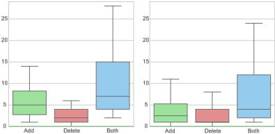
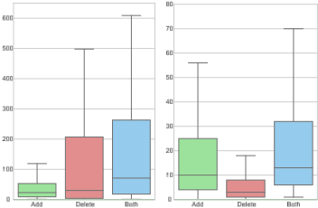
19
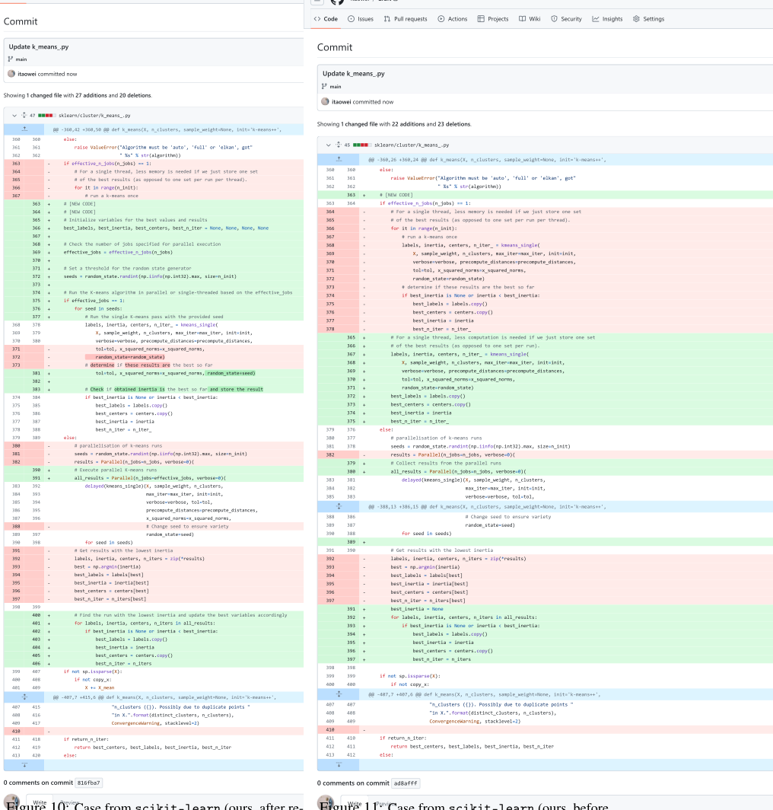
你之所以收到通知，是因为你正在关注此仓库。取消订阅 支持 Markdown 粘贴、拖放或点击以添加文件 这种差异可能指向不同的修复策略或解决问题的态度：本文提出的框架可能更倾向于通过移除潜在有问题的代码来减少错误，而人类开发者则可能倾向于添加新代码来解决 issue。
取消订阅 你之所以收到通知，是因为你正在关注此仓库。
© 2024 GitHub, Inc. 条款 隐私 安全 状态 文档 联系 管理 Cookie 不共享我的个人信息 © 2024 GitHub, Inc. 此外，表 5 中对已解决实例与未解决实例的比较显示，后者包含的文件数、hunk 数和变更代码行数总体上更多。这些实例涉及更多的修改位置，对应着更复杂的场景。这一现象表明，我们的框架在解决此类复杂 issue 方面的性能仍有待进一步提升。
条款 隐私 对此 commit 发表评论 安全 状态 文档 联系 管理 Cookie
此外，不同软件仓库之间难度的差异可能会影响代码变更的有效性。为此，我们统计了各个软件仓库中的解决率，如图 13 所示。从图中可以观察到，在我们的框架中，不同仓库之间的解决率存在显著差异。一些仓库的解决率高达 40%，而另一些则接近 0%。这表明，……之间的差异
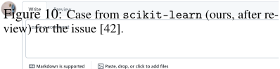
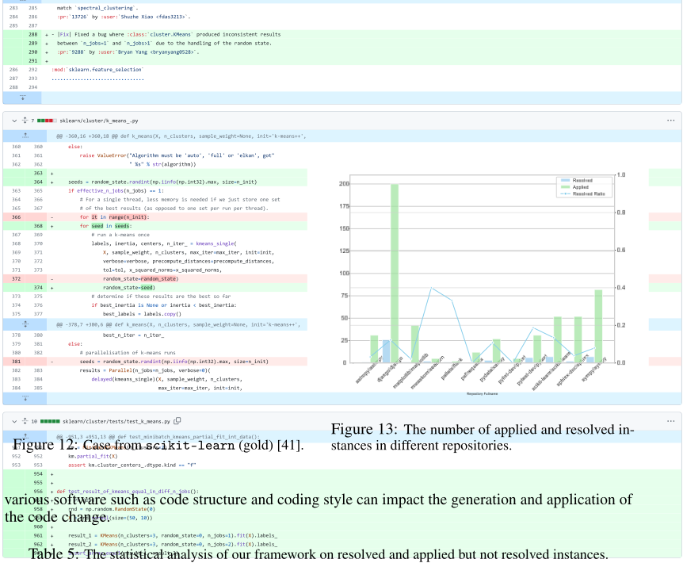
| Resolved Instances.© 2024 GitHub, Inc. Terms Privacy MAGIS.Min | Resolved Instances.© 2024 GitHub, Inc. Terms Privacy MAGIS.Max | Resolved Instances.© 2024 GitHub, Inc. Terms Privacy MAGIS.Avg. | Resolved Instances.Security Status Docs.Min | Resolved Instances.Security Status Docs.Contact Manage Gold Max | Resolved Instances.Security Status Docs.cookies Do not Avg. | Applied but Not Resolved Instances.personal information MAGIS.my Min | Applied but Not Resolved Instances.personal information MAGIS.Max | Applied but Not Resolved Instances.personal information MAGIS.Avg. | Applied but Not Resolved Instances.Gold.Min | Applied but Not Resolved Instances.Gold.Max | Applied but Not Resolved Instances.Gold.Avg. | |
|---|---|---|---|---|---|---|---|---|---|---|---|---|
| # Code Files | 1 | 2 | 1.02 | 1 | 2 | 1.04 | 1 | 13 | 1.5 | 1 | 18 | 1.61 |
| # Functions | 1 | 2 | 1.02 | 1 | 2 | 1.04 | 1 | 13 | 1.5 | 1 | 18 | 1.61 |
| # Hunks | 1 | 4 | 1.45 | 1 | 6 | 1.66 | 1 | 28 | 2.52 | 1 | 52 | 3.72 |
| # Added Lines | 1 | 146 | 9.75 | 0 | 38 | 4.34 | 1 | 920 | 40.38 | 0 | 3,050 | 28.27 |
| # Deleted Lines | 0 | 77 | 5.27 | 0 | 115 | 5.16 | 0 | 9,160 | 327.27 | 0 | 2,975 | 14.51 |
| Change Start Index | 1 | 1,655 | 270.12 | 1 | 1,657 | 256.09 | 1 | 4,568 | 424.84 | 0 | 6,651 | 485.01 |
| Change End Index | 22 | 1,665 | 301.68 | 0 | 1,666 | 315.05 | 9 | 7,150 | 513.13 | 0 | 6,658 | 728.96 |
| # Changed Lines | 2 | 190 | 15.02 | 1 | 115 | 9.5 | 1 | 9,367 | 367.65 | 1 | 6,025 | 42.79 |
| | Resolved Instances.© 2024 GitHub, Inc. Terms Privacy MAGIS.Min | Resolved Instances.© 2024 GitHub, Inc. Terms Privacy MAGIS.Max | Resolved Instances.© 2024 GitHub, Inc. Terms Privacy MAGIS.Avg. | Resolved Instances.Security Status Docs.Min | Resolved Instances.Security Status Docs.Contact Manage Gold Max | Resolved Instances.Security Status Docs.cookies Do not Avg. | Applied but Not Resolved Instances.personal information MAGIS.my Min | Applied but Not Resolved Instances.personal information MAGIS.Max | Applied but Not Resolved Instances.personal information MAGIS.Avg. | Applied but Not Resolved Instances.Gold.Min | Applied but Not Resolved Instances.Gold.Max | Applied but Not Resolved Instances.Gold.Avg. |
由于 Manager 生成的任务描述没有真实标准（ground truth），我们利用 GPT-4 来模拟人工评估，并根据每个任务描述所对应的参考代码变更对其进行打分。表 6 展示了 GPT-4 用于评估任务描述与代码变更之间相关性的标准。GPT-4 给出的分数被视为任务描述的性能指标。
| Score | Meaning |
|---|---|
| 1 | The code changes are unrelated to the task description. |
| 2 | The code changes address a minor part of the task but are largely irrelevant. |
| 3 | The code changes partially meet the task requirements but lack completeness or accuracy. |
| 4 | The code changes are relevant and mostly complete, with minor discrepancies from the task description. |
| 5 | The code changes perfectly align with the task description, fully addressing all specified requirements with high accuracy and completeness. |
| Score | Meaning |
图 14 展示了我们的框架用于解决 Django 仓库 [15] 中问题的详细过程，该问题描述于以下工单 4 中。为解决该问题，识别出两个待修改的候选文件。基于问题描述和候选文件，Manager 定义了两个文件级任务。针对这些任务，指派了两名 Developer：Django Database Specialist（Developer I）和 Alex Rossini（Developer II）。在由两名 Developer 和 Manager 共同参加的启动会议（kick-off meeting）之后，Django Database Specialist 首先开始工作，随后是 Alex Rossini。在编码阶段，Developer I 确定了需要修改的代码行，并生成了用于替换这些代码行的新代码。Developer I 所做的初始代码变更获得了 QA Engineer 的批准。Developer II 在编码过程中进行了三次尝试。QA Engineer 对前两次尝试给出了评审意见。最终，两名 Developer 都完成了各自的编码任务，其代码变更合并后的结果通过了所有必要的测试。
图 15 展示了一个参考的问题解决结果，该结果解决了 Django 仓库 [15] 中的问题 5，人类开发者在两个文件中修改了四个 hunk [16]。尽管修改涉及两个文件，我们的方法仅关注其中一个文件中的变更，如图 16 所示。值得注意的是，这一更简单的修改使该仓库通过了所有必要的测试用例。
图 12 展示了来自 scikit-learn 仓库 [40] 的一个问题 [42] 以及参考代码变更 [41]。在我们框架的流程中，Developer 首先按照图 11 所示对代码进行了修改，但函数 kmeans_single 的参数 random_state（新版本代码中的第 371 行）未被赋予正确的 seeds 数值。在这一错误修改完成后，QA Engineer 识别出了该错误并提供了反馈。其评论强调了这一问题：“此代码变更修改了 K-means 算法的实现，但似乎并不完全正确”。他们进一步阐述道：“与原本的做法——即运行算法多次（n_init 次）并选择最佳结果——相比，仅运行算法一次可能导致更差的结果”。这一批评特别针对与迭代过程（“运行次数”）相关的缺陷。在 QA Engineer 的帮助下，Developer 进一步修订了代码，最终的代码变更如图 10 所示。应用此代码变更后，所有必要的测试用例均通过。
大语言模型（Large Language Models, LLMs）是指包含大量参数的预训练语言模型 [63]。这些模型的参数量通常达到数百亿乃至数千亿的规模。流行的 LLM 包括生成式预训练变换器（Generative Pre-trained Transformer, GPT）系列，例如 GPT3 [45]、GPT-4 [38]，以及公开共享其权重信息的开源模型 LLaMA [52]。开源模型 LLaMA 的第一版参数量在 70 亿到 650 亿之间。许多研究者 [69, 20] 在 LLaMA 的基础上进行改进，构建出新的 LLM。这些 LLM 在通用场景中展现出了强大的自然语言生成能力，其中 GPT-4 尤为突出 [32, 64]。它在包括代码生成在内的多项排名中始终稳居榜首，这反映出其在软件工程相关任务中的巨大潜力 [25]。
凭借 LLM 强大的文本生成能力，许多研究者 [23, 49, 10, 57, 44, 53, 62] 探索了构建基于 LLM 的多智能体系统（Multi-Agent System），使其能够完成超出 LLM 自身能力的任务。例如，MetaGPT [23] 模拟编程团队的标准操作流程（Standardized Operating Procedures, SOPs），通过构建的角色完成包括定义、设计、规划、编码和测试在内的任务（例如，
4 https://code . djangoproject . com/ticket/30664
https://code . djangoproject . com/ticket/30255
22
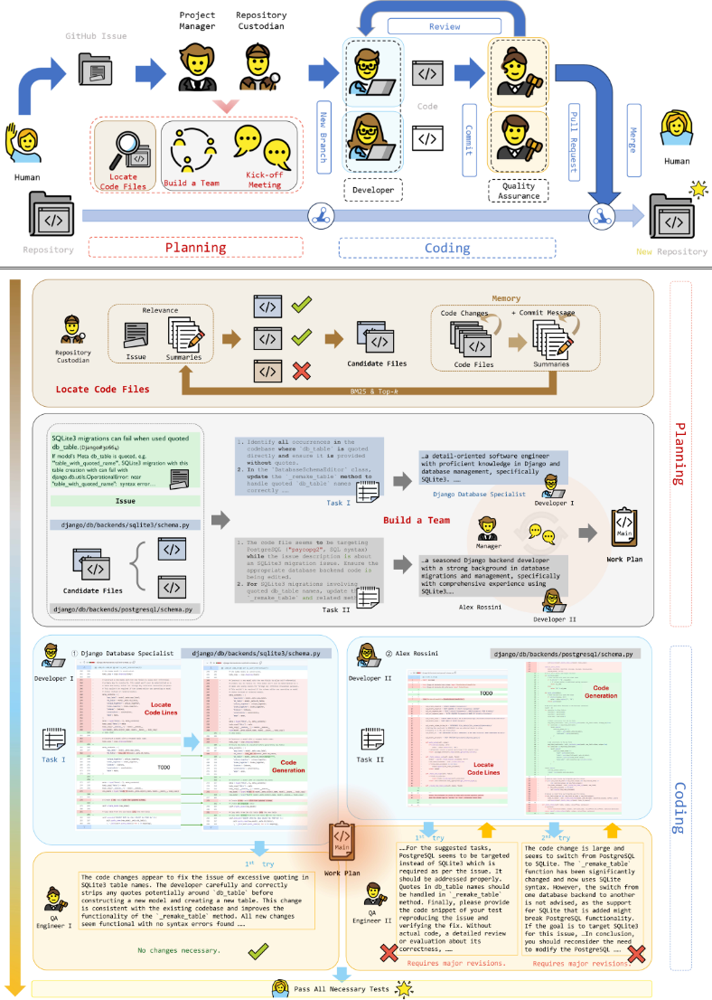
已合并 felixxm 于 2019年11月29日 将 1 个提交合并到 来自
对话
来自提交的更改
所有提交
django:master bmispelon:ticket-30255
检查
文件筛选 对话
筛选已更改的文件
django/contrib/admindocs
utils.py
views.py
tests/admin_docs
test_utils.py
已更改的文件
@@ -3,6 +3,7 @@
import re
from email.errors import
259
verbose = verbose and (
utils.parse_rst(utils.trim_docstring(verbose), 'model', _('model:') + opts.model_name)
utils.parse_rst(cleandoc(verbose), 'model', _('model:') + opts.model_name)
# Show properties and methods without arguments as fields.
263
# Otherwise, show as a 'method with arguments'.
tests/admin_docs/test_utils.py
图 15：来自 Django 的案例
（gold）[16]。
@@ -1,8 +1,9 @@
import unittest
'This __doc__ output is required for testing. I copied this '
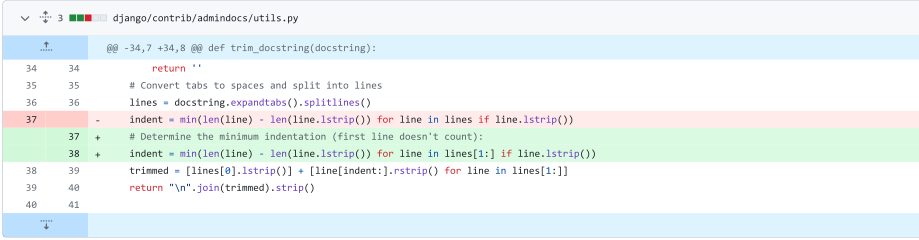
'example from\n`admindocs` documentation. (TITLE)\n\n'
'**Context**\n\n``RequestContext``\n\n``mymodel``\n'
' An instance of :model:`myapp.MyModel`.\n\n'
'**Template:**\n\n:template:`myapp/my_template.html` '
'(DESCRIPTION)\n\nsome_metadata: some data'
self.assertEqual(trim_docstring_output, trimmed_docstring)
def test_parse_docstring(self):
title, description, metadata = parse_docstring(self.docstring)
docstring_title = (
@@ -106,6 +94,13 @@ def test_parse_rst(self):
产品经理、架构师、项目经理等）。该框架在 HumanEval [12] 和 MBPP [2] 上取得了领先的分数，优于许多 LLM，并且研究者展示了其完成软件构建的能力（例如，一个用于玩五子棋游戏的代码仓库），这表明多智能体框架能够在代码生成任务中更好地发挥 LLM 的能力。此外，Qian 等人 [44] 设计了 ChatDev——一个模拟人类开发团队的虚拟开发公司，它将需求分解为原子任务并分配给开发者 Agent。开发者通过相互交流与自我反思机制来缓解 LLM 可能产生的幻觉。实验结果表明，ChatDev 能够在相对较短的时间内（平均少于 7 分钟）完成一些小型项目的构建（平均每个项目不超过 5 个文件）。然而，这些工作关注的是从需求到代码的转换，而忽视了软件演化过程中的代码变更生成，后者不仅需要理解需求，还需要处理大型代码仓库。
GitHub issue 解决是软件演化中的一个基本方面，而缺陷修复则是其中最常见的场景之一。修复缺陷既涉及缺陷定位，也涉及缺陷修复。先前的研究者 [66, 43] 已开发出在修改代码之前定位缺陷的方法。Qi 等人 [43] 提出的 DreamLoc 有效地对缺陷报告和源代码文件的特征进行了建模。在自动程序修复（APR）方面，Wong 等人 [56] 探索了一种基于检索的方法，而 Ye 和 Monperrus [60] 提出了 ITER，这是一种用于处理故障定位重执行的基于生成的方法。此外，一些研究者 [54, 55] 将检索技术与生成模型相结合。最近，Xia 等人 [58] 证明，直接应用流行的大语言模型（LLM）即可显著优于现有的 APR 方法，展示了其在生成多样且有效补丁方面的潜力。Bouzenia 等人 [7] 提出了 RepairAgent，这是一种基于 LLM 的自主 Agent，通过与各种工具进行动态交互来规划并执行缺陷修复。
提示词（Prompt）提示词的设计可能会影响 LLM 的性能，进而影响结果的有效性与公平性 [11]。本文虽然聚焦于所提出框架设计中的创新之处，并依据提示词模板设计的实用指南 [47] 来减少设计偏差的出现，但由于数据集实例中固有的偏差以及 API 资源的限制，完全消除提示偏差极为困难。
数据集（Dataset）数据集所包含的软件类型较为有限。评估数据集 SWEbench 包含 12 个代码仓库，均涵盖 Python 编程语言。然而，与 GitHub 上丰富多样的软件项目相比，这一数量仍然不足。这些被选中的代码仓库在代码风格、架构设计和实现技术方面虽然具有代表性，但无法完全反映所有代码仓库的多样性。特别是，当前数据集可能未能涵盖某些专业领域或不同的编程范式，例如微服务架构 [67] 和函数式编程 [29]。这一局限性意味着，尽管我们的框架在设计上不依赖于任何特定软件，其有效性和普遍适用性的验证仍可能受到这一有限样本范围的影响。因此，将本文的研究发现应用于其他代码仓库可能需要进一步的验证。